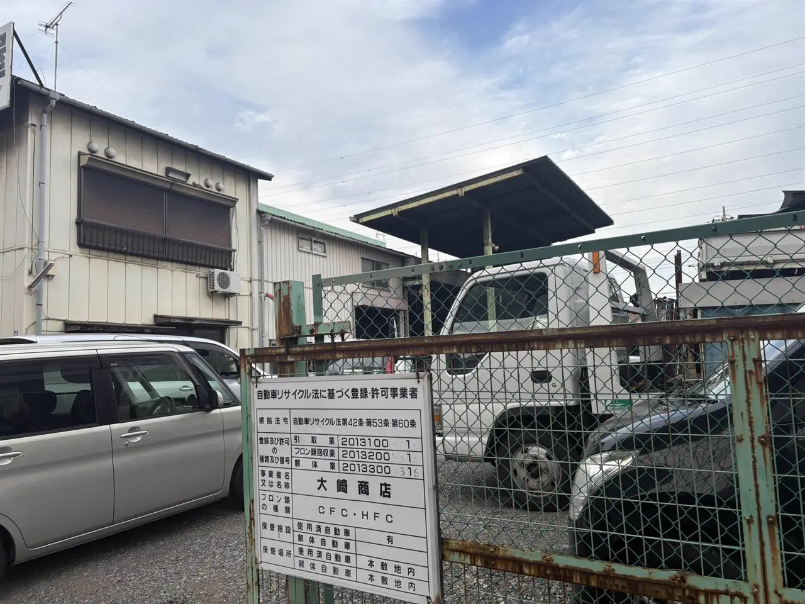
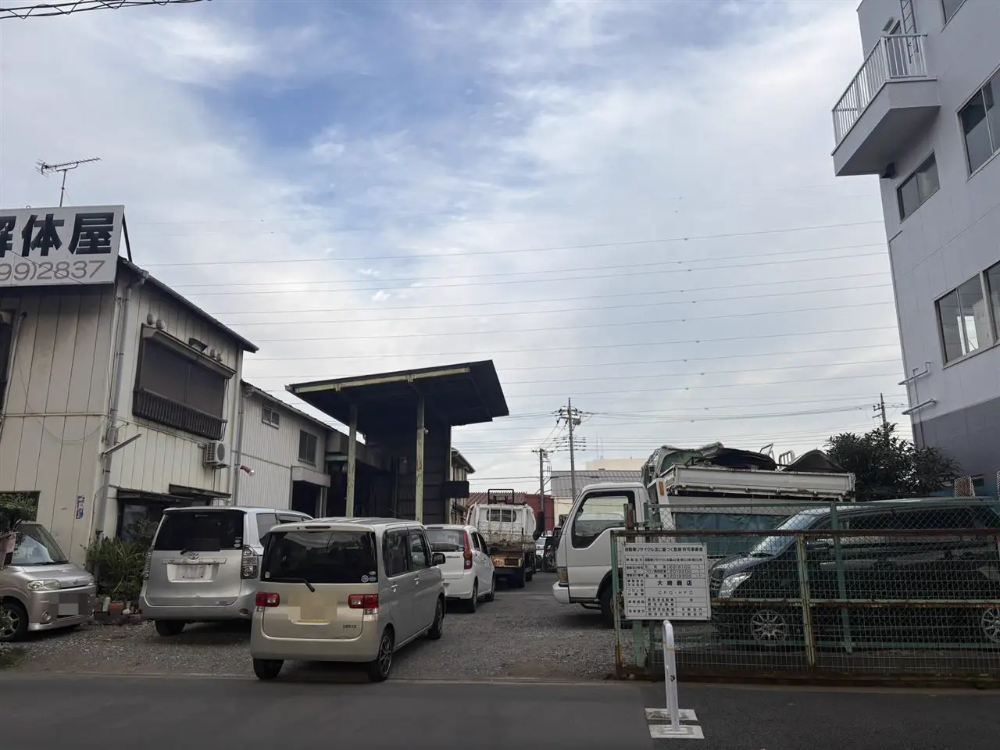
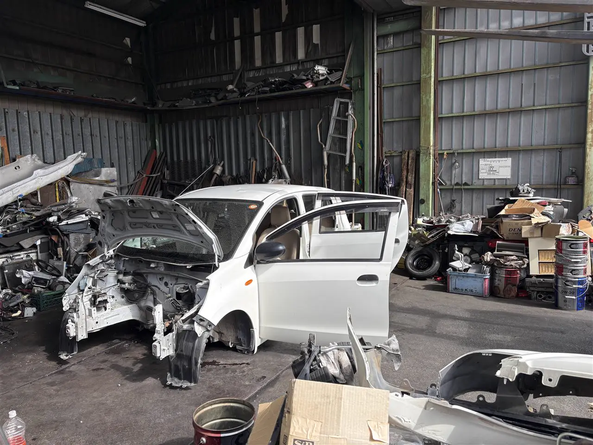

廃車したあと、車はどうなるの？
廃車にした車は、どう解体される？
足立区の大崎商店・入谷店の現場を写真で紹介
公開
こんにちは、東京都足立区江北で自動車解体・廃車買取をしている「大崎商店 環七店」です。
この記事の要点
- 廃車にした車は、自動車リサイクル法に沿って、順番に解体されます。
- フロン類やエアバッグ類を適正に処理し、使える部品や材料を取り出します。
- 大崎商店の解体は、入谷店で行っています。現場を写真でご紹介します。
「廃車にした車は、そのあと、どうなるの？」
「ちゃんとした業者に、渡せているのかな？」
「解体は、どんな場所でやっているの？」
廃車を依頼すると、車はお手元から離れます。そのあと、どう扱われるのかが、気になる方もいらっしゃると思います。
この記事では、廃車にした車が解体されるまでの流れと、安心して任せられる業者の見分け方を、やさしくご紹介します。後半では、大崎商店の解体の現場（入谷店）を、写真でご案内します。
① 廃車にした車は、どう処理される？
ここでは、廃車のうち、使用済自動車として解体する車の流れをご紹介します。一時的に使用を中止しただけの車や、中古車として再販売される車が、すべて解体されるわけではありません。
日本では、使い終わった車（使用済自動車）は、自動車リサイクル法にそって処理されます。この法律では、処理にかかわる事業者が、次の4つに分かれています。
| 事業者 | 役割 | 必要なもの |
|---|---|---|
| 引取業者 | お客様から、使用済自動車を引き取る | 都道府県知事等への登録 |
| フロン類回収業者 | エアコンなどに使われているフロン類を、回収する | 都道府県知事等への登録 |
| 解体業者 | 車を解体し、部品や金属を取り出す | 都道府県知事等の許可 |
| 破砕業者 | 解体された車体を圧縮・せん断したり、細かく砕いたりする | 都道府県知事等の許可 |
事業所には、行っている業務の登録・許可を示す標識を掲げることになっています。1社ですべての工程を行うとは限りません。 引取りだけを行う登録業者から、許可を持つ解体業者へ引き渡す方法もあります（環境省・自動車リサイクルの概要）。
② 車が解体されるまでの流れ
引取業者・フロン類回収業者・解体業者などが役割を分担して処理します。おおまかな流れは次のとおりです。工程の順番や方法は、車の装備・状態や事業者によって異なります。
- 登録された引取業者が車を引き取る：車両やリサイクル料金の預託状況を確認し、リサイクルの流れに乗せます
- フロン類を適正に回収する：対象のエアコン冷媒を、フロン類回収業者が回収します
- エアバッグ類を適正に処理する：取り外して回収するほか、メーカー等の委託に基づき、車に取り付けたまま作動させる「車上作動処理」を行う場合もあります
- 燃料・廃油・廃液、バッテリー・タイヤなどを回収する：使える部品の取り外しとあわせて、適正に処理・再資源化するために分けます
- 再利用できる部品や材料を取り出す：部品の状態などを確認し、再利用できるものと資源として回収するものを分けます
- 残った車体を、破砕業者など次の工程へ引き渡す：許可を受けた事業者が、圧縮・せん断や破砕などを行い、金属などを回収します
車は、そのまま捨てられるのではなく、使える部品は再利用され、金属などは資源として回収されるしくみです。破砕後に残るプラスチックやガラスなどの混合物は「シュレッダーダスト（ASR）」と呼ばれ、メーカー等が引き取り、リサイクル・適正処理を行います（環境省の案内・岐阜県の案内）。
なお、使用済自動車から再利用部品を取り外すだけでも、解体業の許可が必要です。通常の整備・修理のための部品交換とは区別されます（環境省FAQ）。
車の解体と、車検証・ナンバーの抹消や返納は別の手続きです。 解体しただけで登録関係の手続きが自動で完了するわけではありません。書類が必要な場合は、廃車したあとの書類の記事もご覧ください。
③ 安心して任せられる業者の見分け方
廃車を依頼する前に、次の点を確認すると安心です。
- 行う業務に必要な登録・許可があるか：引き取る業者は引取業の登録、フロン類を回収する業者はその登録、解体する業者は解体業の許可を確認します。依頼先自身が解体しない場合は、引渡し先も確認しましょう
- 解体は、どこで行うのか：自社で解体するのか、ほかの業者へ渡すのか、確認しましょう
- 費用と、お金の流れが、はっきりしているか：見積もりに、何が含まれているかを確認します
- 事業者の情報を確認できるか：会社・店の名称、所在地、登録・許可の種類と番号を確認します。「無料」という言葉だけで判断せず、必要な登録・許可がない業者への引渡しは避けましょう。東京都では、関連事業者の検索案内も公開されています
依頼先によって、解体の場所や、対応が違います。気になる点は、事前に、依頼先へ確認してください。
大崎商店の場合：解体は、入谷店で行っています
ここからは、足立区の大崎商店の場合を、ご案内します。
大崎商店は、自動車リサイクル法に基づく、引取業・フロン類回収業・解体業の登録・許可を受けた事業者です。車の解体は、解体業の許可を受けた「入谷店」（足立区入谷7丁目）で行っています。

写真は、入谷店の入口に掲げている、登録・許可事業者の標識です。引取業・フロン類回収業・解体業の表示を確認できます。
入谷店の入口と、解体の建物

入谷店は、入口から入ると、敷地の奥に、解体を行う建物があります。
解体の現場


こちらは、入谷店の作業場の様子です。解体を進めている車は、ドアやボンネットが開き、部品が取り外されていきます。まわりには、取り外した部品や、工具などが置かれています。
入谷店について、知っておいていただきたいこと
- 見学は、基本的に、お受けしていません。 作業場には、重い部品や、大きな機械があり、危険なためです
- 解体の作業は、早いと、1日に1台ほどです。車の状態によって、かかる時間は変わります。入庫から解体・抹消等の完了までが1日という意味ではなく、日数は作業状況や書類などに応じてご案内します
- 取り外した部品は、状態によっては、再利用します。ただし、古すぎるものや、状態の悪いものが、多くを占めます
- 動かない車（不動車）は、レッカーで、直接、入谷店へお持ちいただけます。事故車・不動車のご相談は、お電話ください
- 入谷店でも、バッテリーのお持ち込みや、車の部品の引き取りを行っています
- タイヤ・中古部品の販売は、環七店が中心です（入谷店では、原則、行っていません）
- 解体作業は、土曜日も行っています。入谷店は、日曜・祝日・第2土曜が、お休みです
- お持ち込みの前には、一度、お電話で、ご確認をお願いします
大崎商店では
- 解体費用・手続き代行費用・印紙代は、別請求しません
- 足立区内は、引き取り無料
- 足立区外も、買取価格がつかない車は、環七店から片道約30分圏内は、引き取り無料
- 買取価格がつく車は、圏外でも、所在地と車の状態によっては無料で引き取り（事前にご案内します）
- 車のお持ち込みは、どこからでも歓迎（基本は環七店。日時は、事前にお電話でご相談ください）
くわしくは、廃車の手数料・解体費用・レッカー代は？、出張引き取りの対応エリア｜無料で伺える範囲は？の記事をご覧ください。
大崎商店のお店の紹介は「大崎商店ってどんなお店？足立区江北で自動車の解体・廃車買取をしています」、事故で動かなくなった車の引き取りは「足立区で事故車を買い取ってもらうには？動かない車でも大丈夫」、一時抹消と永久抹消の違いは「「一時抹消」と「永久抹消」の違いをやさしく解説｜廃車はどちらを選ぶ？」の記事をご覧ください。
ご自分の車の場合が気になったら、お気軽にご相談ください。車の状態と置き場所を伺い、ご案内します。
電話で相談する03-3854-4141よくある質問
Q. 廃車にした車は、どうなりますか？
A. 解体する車は、自動車リサイクル法にそって、フロン類の回収やエアバッグ類の適正処理を行い、使える部品や金属などを再利用・再資源化します。再販売する車は、解体する車とは扱いが異なります。
Q. 部品を取り外すだけでも、許可が必要ですか？
A. 必要です。使用済みの車から部品を取り外す作業は、解体業にあたり、都道府県知事等の許可が必要とされています。
Q. 業者が、許可を受けているか、どう確認しますか？
A. 事業所の標識や自治体の案内などで、名称・所在地・必要な登録や許可を確認します。引取りだけを行う業者は、解体の引渡し先も確認してください。
Q. 「無料で回収します」という業者に、渡しても大丈夫ですか？
A. 無料かどうかだけでは判断できません。引取業の登録や、解体を行う業者の許可などを確認してください。必要な登録・許可がない業者への依頼は避けましょう。
Q. 解体の様子を、見学できますか？
A. 大崎商店の入谷店では、作業場が危険なため、見学は基本的にお受けしていません。
Q. 大崎商店は、どこで解体していますか？
A. 入谷店（足立区入谷7丁目）です。登録・許可を受けた事業者として、解体を行っています。
廃車のご相談は、大崎商店へ
電話で相談する 03-3854-4141メールで相談する（フォーム）ご来店の前に、お電話ください。引き取りなどで外出していることもあり、お電話いただければ、受け入れの可否や、ご案内できる日時をお伝えできます。
大崎商店 環七店
電話：03-3854-4141
〒123-0872
東京都足立区江北7丁目1−3
営業時間：月〜土 10:00〜18:00
休業日：日曜・祝日
環七沿い／舎人ライナー
西新井大師西駅
大崎商店 入谷店
電話：03-3899-2837
〒121-0836
東京都足立区入谷7丁目5−11
営業時間：月〜土 9:30〜17:30
休業日：日曜・祝日・第2土曜
引き取りやご相談のお電話は、環七店がスムーズです。お電話の際は、「廃車の相談」とお伝えください。
※掲載の写真は、実際の入谷店で撮影したものです。
参考：環境省・自動車リサイクルの概要／環境省・自動車リサイクル法FAQ／岐阜県・自動車リサイクル法概要／東京都・関連事業者の検索